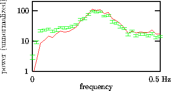
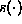
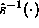

It is argued in Ref. [30] that for short and strongly correlated sequences, the AAFT algorithm can yield an incorrect test since it introduces a bias towards a slightly flatter spectrum. In Fig. 3 we see power spectral estimates of a clinical data set and of 19 AAFT surrogates. The data is taken from data set B of the Santa Fe Institute time series contest [31]. It consists of 4096 samples of the breath rate of a patient with sleep apnoea. The sampling interval is 0.5 seconds. The discrepancy of the spectra is significant. A bias towards a white spectrum is noted: power is taken away from the main peak to enhance the low and high frequencies.

Figure: Discrepancy of the power spectra of human breath rate data (solid line) and 19 AAFT surrogates (dashed lines). Here the power spectra have been computed with a square window of length 64.
Heuristically, the flatness bias can be understood as follows. Amplitude
adjustment attempts to invert the unknown measurement function 
empirically. The estimate  of the inverse obtained by the
rescaling of a finite sample to values drawn from a Gaussian distribution is
expected to be consistent but it is not exact for finite N. The sampling
fluctuations of  will be essentially
independent of n and thus spectrally white. Consequently, Gaussian scaling
amounts to adding a white component to the spectrum, which therefore tends to
become flatter under the procedure. Since such a bias can lead to spurious
results, surrogates have to be refined before a test can be performed.
will be essentially
independent of n and thus spectrally white. Consequently, Gaussian scaling
amounts to adding a white component to the spectrum, which therefore tends to
become flatter under the procedure. Since such a bias can lead to spurious
results, surrogates have to be refined before a test can be performed.